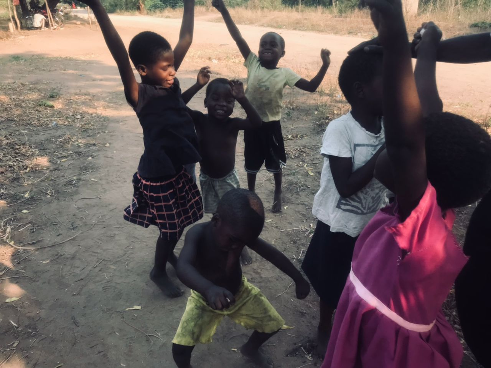
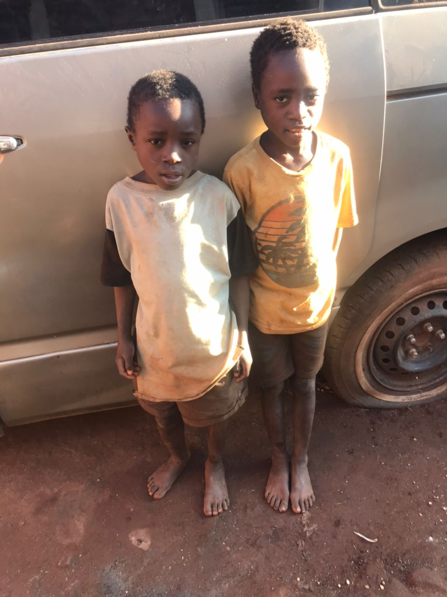

My Story
Wisdom, Goodness, and the Power of Perseverance
My name is Joseph Peter Kamvabingu. I believe that wisdom is found not only in knowledge but in how we rise after setbacks—and that true goodness shines when we uplift others along the way.
Growing up with a deep passion for technology and a heart for my community, I always dreamed of making a difference. After completing Secondary School, I enrolled at a university in Lilongwe to study Computer Science. Though I faced financial hardship that cut my studies short, I never let go of my dreams.
Along my journey, I was blessed with remarkable people—mentors like Fazwell Mwanguku, who introduced me to programming, and friends like my twin brother Emmanuel, whose shared passion kept us motivated. I also learned web development from Isaac, a brilliant friend whose guidance opened new doors for me.
With determination, I joined TME Education Africa and sharpened my skills in programming and electronics. I met incredible individuals through church and community, like Brenno Allen, whose encouragement eventually led to our co-founding of Code-Tailors.
Today, I lead Code-Tailors, a company that uses technology to empower communities. I’m also the founder of Dziko Lathu, a platform promoting innovation and grassroots development in Malawi. Through projects like the Dziko Lathu organizations, I advocate for inclusive education and support for underprivileged children.
I strive to live with purpose, compassion, and vision. I believe in a future shaped by collaboration, creativity, and kindness—and I’m committed to playing my part in making it a reality.
This is my journey. One of wisdom, goodness, and unwavering belief in the power of community. May it remind others that no matter the challenges, we all have the power to build something meaningful.
The Beginning
I started helping kids in my community by providing school uniforms and covering their education fees. This initiative began when I saw the challenges they faced.
Launching Dziko Lathu
Dziko Lathu is a network that unites various organizations, sectors, and individuals, all working towards positive change and growth in Malawi. By bringing together those passionate about transforming their communities, Dziko Lathu seeks to create a future where every Malawian can thrive. We welcome everyone who wants to help build a better Malawi through collaboration, support, and active participation in our shared goals.

Helping More Children
As part of my journey, I expanded my efforts to reach 23 children, supporting their education and growth opportunities.

My Vision
My dream is to create platforms for change in Malawi, focusing on innovation, transparency, and opportunities for all.

Supporting Future Leaders
In Education for young ones
Protecting Malawi's Nature
I am dedicated to preserving Malawi's natural beauty by promoting conservation efforts, educating communities, and addressing deforestation and wildlife protection.

Advancing Agriculture
Through innovative farming techniques and supporting local farmers, I aim to boost agricultural productivity and food security across Malawi.

Empowering Rural Communities
By providing resources and training, I strive to uplift rural communities, fostering economic independence and sustainable development.